汇特讯-工作语言规范AI稽查平台
使用手册

北京七山创智科技有限公司
目录
工作语言规范稽查平台运行环境
工作语言规范稽查平台推荐运行环境在Windows 10 64位、Windows 7 SP2 64位环境上稳定运行。
推荐CPU：Intel(R) Core(TM) i5-9400 CPU 及以上
推荐GPU：Intel(R) UHD Graphics 630及以上，NVIDIA-GeForce系列
推荐浏览器：Microsoft Edge、Google Chrome浏览器
推荐外设：可使用外接摄像头、Mic等外接设备提升平台音质与摄像头画面质量。
第1章 产品简介
工作语言规范稽查平台采用先进的大模型AI技术，结合轻便的领夹式5G录音对讲机，实现对执法和服务行业工作人员的语言沟通使用规范和服务质量监管。
主要特性
- 语音转文字：采用先进的语音识别大模型HTX-ASR，将实时上传的工作现场沟通的语音转写成文字内容
- 智能语音分析：采用Deepseek大语言模型，对转写后的语言文字进行智能分析，提取工作规范用语关键词，对现场交流过程的用语规范性进行综合评价打分
- 工作质量监管：自动生成工作质量评价记录，问题隐患一目了然，有效防范工作质量事故于未然
- 高效审计：管理人员可通过客户端对现场客服人员的工作记录进行高效检索和回放，通过关键字检索、文字-语音时间轴对齐，点击文字内容自动跳转到相应的原始语音播放
- 实时稽查：管理人员通过客户端可以实时监听现场客服人员工作过程语言交流，必要时还可以远程插话直接提醒现场工作人员注意事项
- 实时定位：管理人员可通过客户端查看现场工作人员实时位置、行动轨迹，掌握现场人员动态
- 对讲调度：管理人员和现场工作人员之间还可以使用对讲功能进行快速沟通调度
- 领夹式录音/对讲机：方便携带，操作简便，续航时间长，可连续录音工作8小时以上
主要功能
- 语音呼叫、对讲
- 对讲抢话、对讲切换、对讲组单个/全部禁言、追呼
- 遥毙、激活
- GIS功能
- 视频审核
- 图片文件：
- 视频文件
- 录音文件
- AI综合评价
- 语音审核
- 录音记录
- AI综合评价
- 记录详情
- 同步播放
终端操作指南
终端快速指南
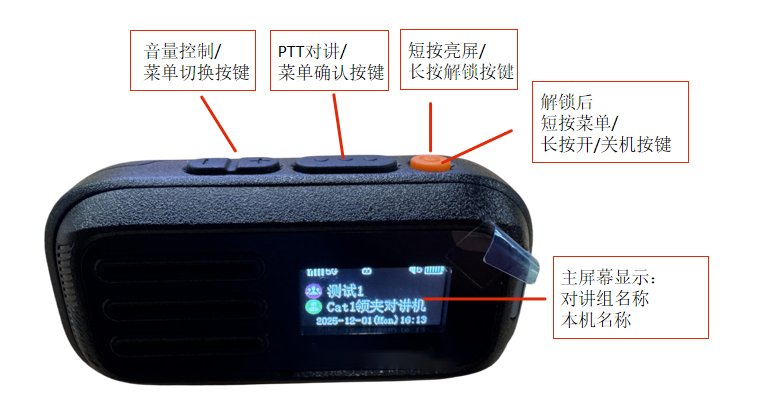
对讲抢话
当需要抢话时，按住PTT按键，显示正在对讲，可以对着麦克风用正常声调讲话。请保持麦克风距离嘴唇约3-5cm，使通讯音质达到最佳。放开PTT按键，听到“咚”，表示处于对讲接收状态。
主界面上显示当前所在对讲组，以及我的状态，其中我的状态有：
- 听讲：蓝色显示当前有人在讲话，当前用户处于听讲的状态；
- 讲话：红色表示话机人获得话权，处于讲话状态；
释放话权
当发言结束，松开PTT键即可释放话权。
切换当前对讲组
长按橙色按键进行解锁；
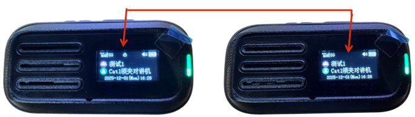
解锁后短按橙色按键进入主菜单界面；
通过音量键移动光标至“群组选择”时按动PTT按键确认进入；
进入后，通过音量键移动光标选择目标群组后，再次按动PTT按键确认进入对讲组；
语音审核
领夹对讲机长按音量+键，终端提示开始录音，开始录音后，终端侧的讲话声音会同步送给服务器进行语音审核；
长按音量减键结束录音。
录音完成后，可登录企业调度台在语音审核功能中进行查阅该次语音审核评分；
语音审核评分会根据该次语音过程中出规范用语与不规范用语进行标注实现工作语言规范稽查。
执法记录仪快速指南
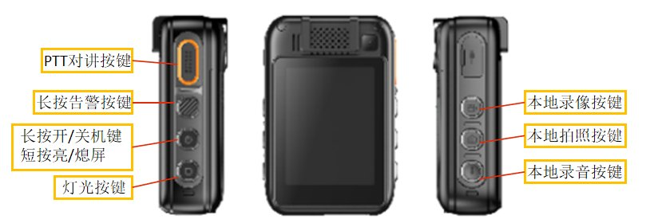
对讲抢话
当需要抢话时，按住PTT按键，听到“嘀”表示通话成功，可以对着麦克风用正常声调讲话。请保持麦克风距离嘴唇约3-5cm，使通讯音质达到最佳。放开PTT按键，听到“咚”，表示处于对讲接收状态。
主界面上显示当前所在对讲组，以及我的状态，其中我的状态有：
- 听讲：表示当前有人在讲话，当前用户处于听讲的状态；
- 讲话：表示话机人获得话权，处于讲话状态；
- 排队：当前组中有人在讲话，当前用户处于抢话排队状态；
- 关闭：对讲组为关闭状态；
- 空闲：对讲组内没有人讲话；
- 发起中：发起对讲时，当前用户处于发起中的状态。
释放话权
当发言结束，松开PTT键即可释放话权。
切换当前对讲组
在主界面下方，显示了当前“我”的状态、所在的对讲组和进在进行的通话，可通过以下方式进入切换对讲组界面：
按对讲组列表icon进入“切换对讲组”界面，显示当前所在的固定对讲组，如下图所示。
进入上图界面后，点击需要的组可切换当前对讲组。
本地记录
用户使用执法记录仪进行：本地拍照、本地录像、本地录音功能时，文件均可再本地记录功能中进行查阅。
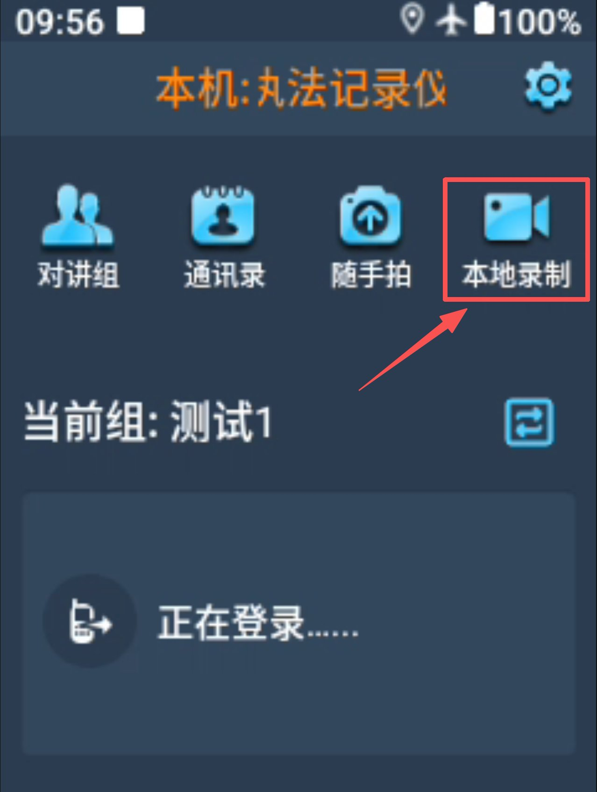
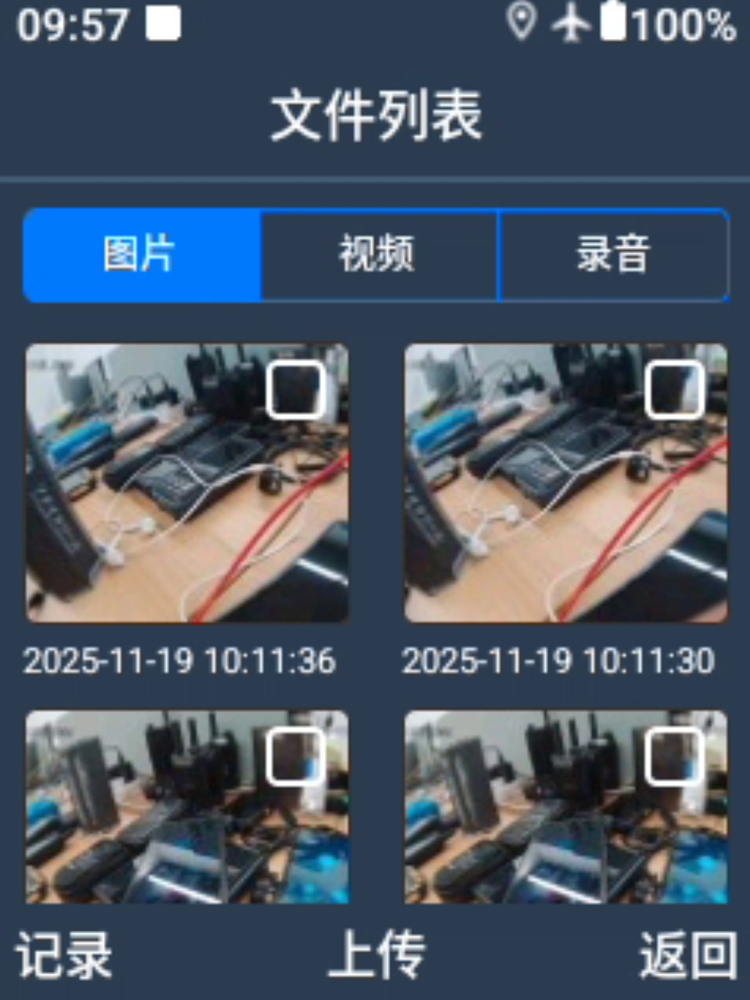
用户也可勾选目标文件，进行上传至调度台进行查阅下载。
第3章 系统登录
登录
使用浏览器打开链接https://rtc.wisecommey.com:2552/，显示工作语言规范稽查平台登录界面；
输入登录信息：
- 登录名/密码：即登录该平台的用户名和密码；
点击【登录】按钮，登录。
图3-1 登录界面
退出
平台台用户使用鼠标悬浮在界面右上角头像上，可以弹出“账户信息”和“安全退出”选择按钮，点击【安全退出】按钮弹出退出提示，再次点击【退出】按钮即可退出系统。
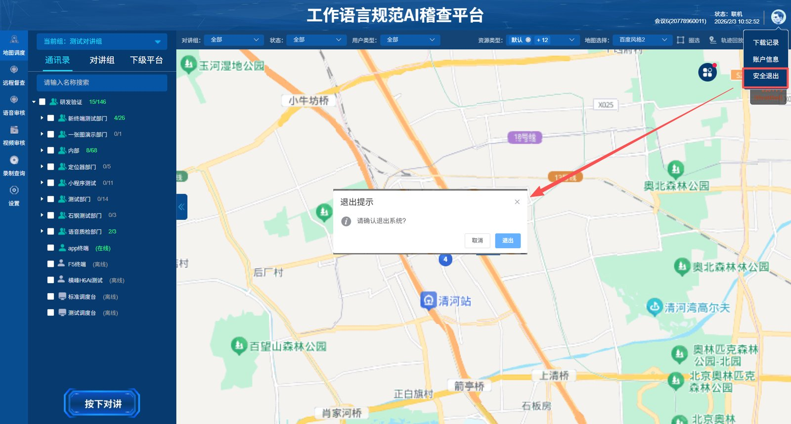
图3-2 退出界面
第4章 操作指南
导航栏操作区
登录平台后，首先进入地图主界面；
导航栏操作区，位于主界面最左侧，包括：地图定位、语音审核、视频审核、设置，4项功能。可通过点击导航栏功能模块，进入对应功能。
图4-1平台导航栏操作区
4.1 地图调度
用户登录平台后主页显示地图调度功能，页面左侧显示通讯录列表。
地图界面可显示终端位置及状态信息。
列表显示系统中对讲组用户分布列表以及企业通讯录（平台用户与监控摄像头在通讯录的最后端展示）。可以根据需要，点击右侧小箭头隐藏/显示通讯录界面。
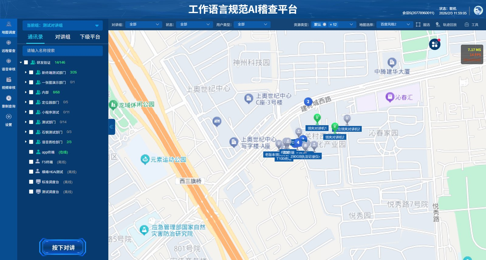
图4-2 地图界面
对讲组&通讯录展示区
该区域位于地图界面的左侧，显示系统中对讲组用户分布列表以及企业通讯录（平台用户与监控摄像头在通讯录的最后端展示）。可以根据需要，点击右侧小箭头隐藏/显示对讲组&通讯录界面。
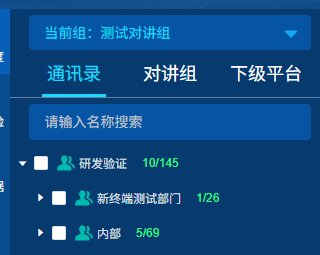
图4-3 平台通讯录展示
对讲组用户列表分为固定组和临时对讲两部分：
- 固定组：该列表显示由管理员在AMP中创建的组；
- 临时对讲：该列表显示临时对讲记录。
鼠标右键单击某一对讲组，弹出功能菜单，可进行快捷操作：
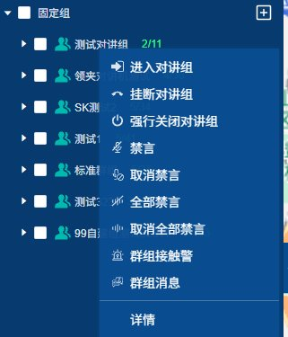
图4-4 平台对讲组快捷操作
鼠标移动到树形列表中的用户上，右键单击用户（只针对非本平台终端），弹出功能菜单。对讲组和通讯录的用户列表均可进行快捷操作，且操作相同，功能一致。若终端无某项功能时，功能项置灰不可点。
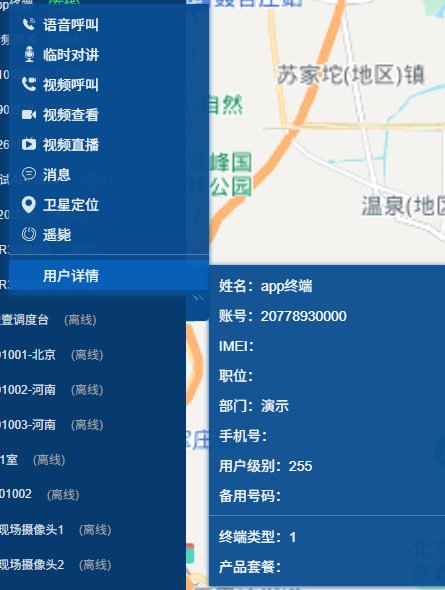
图4-5 平台对讲组成员快捷操作
- 遥毙/激活：可对终端用户进行激活、遥毙操作（对平台用户不生效，只针对终端）正常状态下显示为遥毙，用户被遥毙后，显示为激活；遥毙后成员图标变为红色，用户不能发起或接收任何消息及呼叫，此时的用户被强制离线，在遥毙状态下的用户无法登录终端或APP；选择激活后，用户可以登录，进行正常的操作；
- 用户详情：成员右键菜单，滑动到“用户详情”选项，弹出用户详情框，可查看用户姓名、职位、部门、手机号（联系方式）、用户级别、终端类型、产品套餐（支持的功能）等信息。
对讲操作区
进入地图界面左下角是对讲显示区，此区域显示当前正在讲话的用户即话权人，当前登录用户的状态，单击【按下对讲】按钮讲话或释放话权。
若当前有人讲话，可点击【按下对讲】按钮，进入抢话状态，按钮变为【抢话中】，5s后未抢到话权，则自动释放抢话状态，按钮变为【点击对讲】状态。
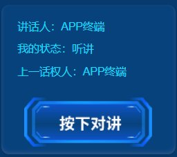

图4-6 平台对讲操作区
对讲组切换
在“固定操控区”，单击“当前组”所在行，出现对讲组选择列表，可以自由切换；
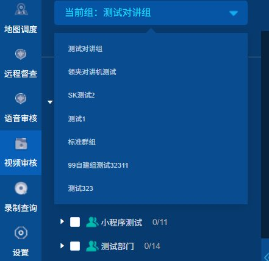
图4-7 切换对讲组界面
在“对讲组&通讯录显示区”，用户使用鼠标右键单击对讲组名称，出现对讲组操作菜单。
- 进入对讲组
点击【进入对讲组】，平台会加入到该对讲组的会话当中：
如果该对讲组是开启的，平台切换到该组中，且在里面是听讲的状态；固定操控区的组和状态跟着变化；
如果该对讲组不是开启的，平台只是切换到该组中，该组成为当前组，用户可以申请话权；固定操控区的组和状态跟着变化。
- 挂断对讲组
点击【挂断对讲组】，平台用户在对讲组中的会话关闭，组内其他成员可以继续进行对讲。
- 强制关闭对讲组
点击【强制关闭对讲组】，关闭当前对讲组的会话，该组处于关闭状态，组内成员被强行踢出。
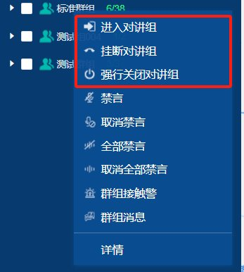
图4-8 对讲组操作菜单界面
对讲组禁言
右键单击对讲组名称，除了上述切换对讲组的操作，还可以对单个或全部对讲组进行禁言/取消禁言的操作。
- 禁言/取消禁言：点击【禁言】后，本组被禁言，本来置灰的【取消禁言】切换成可操作状态，点击可以取消禁言设置；
- 全部禁言/取消全部禁言：点击【全部禁言】后，所有对讲组被禁言，本来置灰的【取消全部禁言】切换成可操作状态，点击可以取消全部禁言的设置。
语音呼叫
在“对讲组&通讯录显示区”中，滑动鼠标到某用户单击鼠标右键，出现快捷操作功能对话框，点击【语音呼叫】按钮发起语音呼叫；
发起呼叫，且呼叫线路建立后，
调度主界面中：平台右侧线路列表显示被叫名称/号码、去电状态、挂断，被呼叫方显示来电界面，“来电提醒窗口”显示来电名称/号码、接听、挂断；此时，等待被呼叫方接听即可。
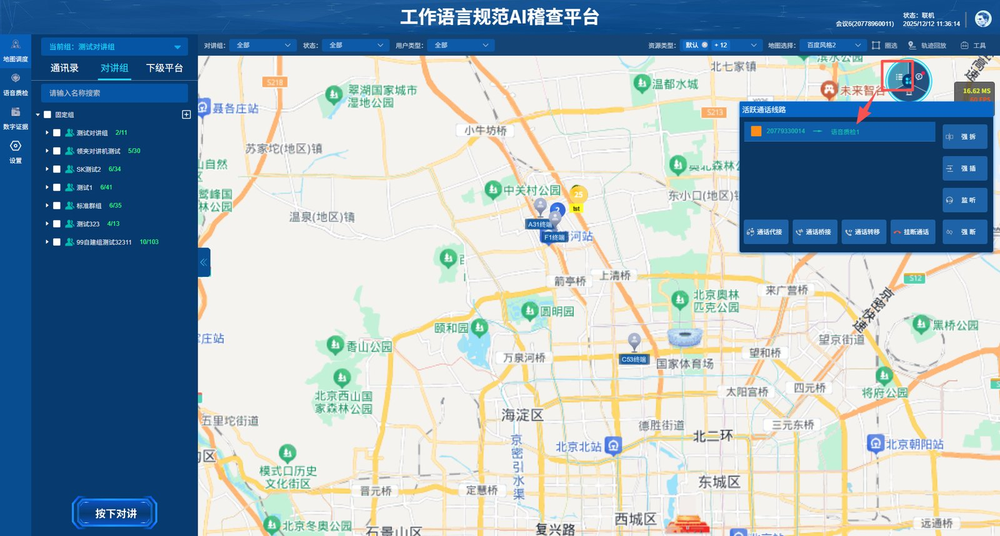
图4-9 语音呼叫去电界面
接听来电
- 空闲状态
当平台用户空闲时，有来电呼入，平台线路列表与右下方弹出“来电提醒”提示窗口，此时，平台用户可选择接听或拒接来电。
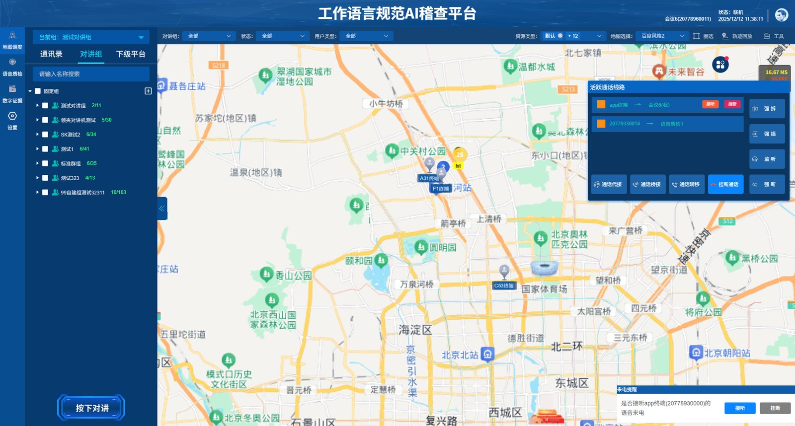
图4-10 来电提醒提示框
- 接听来电：
单击【接听】，即可接听。主界面出现通话窗口，显示对端名称/号码、通话时间以及【挂断】按钮。
- 挂断来电：
直接单击通话窗口下方的【挂断】按钮。
- 非空闲状态
当平台用户处于非空闲状态时，有来电呼入，调度主界面中弹出提示框。
平台可保持上一路通话，与新接来电进行语音通话。
一键告警来电
平台接收到一键告警的来电后，平台会响起警报声，并弹出呼入选择窗口。
点击【接听】按钮，即接听来电；
点击【挂断】按钮，即拒接来电。

图4-12 一键告警来电提醒提示框
活跃线路
平台用户可在活跃线路中看到企业中正在进行的语音线路，并进行，监听、强插、强拆、强断等远程督察功能；
图4-13 线路状态
监听：选择目标通话线路后，发起监听操作，即可实时监听该条语音通话线路；监听时，活跃线路中会显示平台正在监听的线路；

图4-14 监听线路状态
强插：调度人员选择目标通话后，发起 “强插” 操作，系统会将其接入当前通话链路，实现三方及以上的实时语音通话；
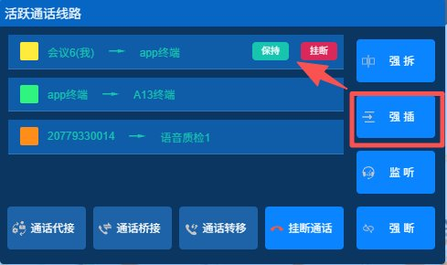
图4-15 强插线路状态
挂断通话
- 拒接来电
当有来电呼入时，平台用户可直接点击“来电提醒”窗口中的【挂断】按钮，拒接来电。
- 挂断正在进行中的通话
通话正在进行中，平台用户可直接点击“通话”窗口中的【挂断】按钮，即可挂断通话。
临时对讲
在“对讲组&通讯录显示区”中，勾选成员前面的复选框，在平台界面弹出选中成员列表，可以在不同对讲组或部门中选择成员，选择完成后点击【临时对讲】可发起临时对讲。

图4-16 发起临时对讲
平台用户可在复选框上方修改临时对讲组名称，以方便识别对讲组。
发起临时对讲后，出现临时对讲界面；
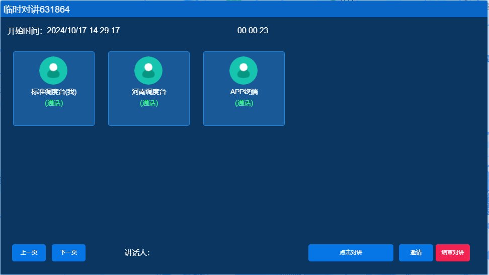
图4-17 临时对讲界面
- 左上角窗口显示临时对讲名称；
- 左下角显示当前讲话人；
- 点击【点击对讲】按钮，申请话权，抢到话权后可以进行讲话；点击【点击释放话权】按钮，释放话权；
- 点击【结束对讲】按钮，结束本次临时对讲；
- 点击“邀请”按钮，弹出成员列表框，可为临时对讲添加新成员。
语音广播
在“对讲组&通讯录显示区”中，勾选成员前面的复选框，在平台界面弹出选中成员列表，可以在不同对讲组或部门中选择成员，选择完成后点击【语音广播】可发起语音广播。

图4-18 发起语音广播
发起语音广播后，出现语音广播弹窗；
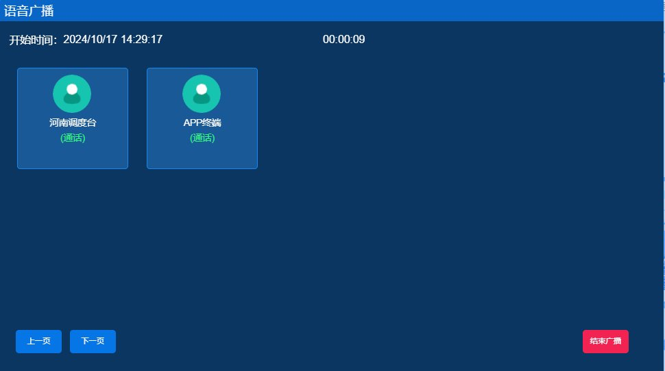
图4-19 语音广播界面
发起语音广播后平台弹出语音广播弹窗，弹窗内显示已邀请成员。
成员未进入广播时成员状态显示振铃；
成员进入广播后成员状态显示通话；
成员进入广播后，平台直接发起讲话即可；
结束广播时，可点击语音广播弹窗右下角“结束广播”按钮。
4.2 远程督察
用户登录平台后可通过点击左侧导航栏远程督察功能，进入远程督察功能界面。
远程督察功能支持多场景下的一对一通信、多人语音会议、语音广播、临时对讲等，调度台用户可在该功能中详细看到部门中正在进行的语音线路，并进行，监听、强插、强拆、强断等远程督察功能，为调度人员提供了对语音通信全流程的精准管控能力，确保在各类场景下通信资源的高效分配与紧急指令的有效传达。
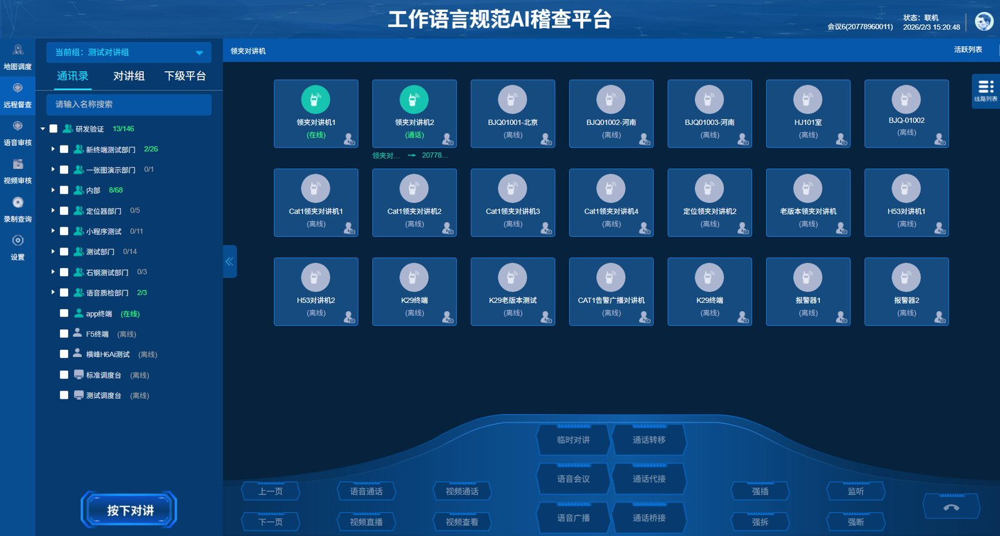
图4-20 远程督察功能界面
远程督察界面显示以企业成员为主，可以再该界面中直观看到企业成员在线状态与语音活跃状态；
调度台用户可在成员界面中直接点击目标用户进行语音通话、视频通话、视频直播、视频查看、临时对讲、语音会议、语音广播等远程督察操作；
语音呼叫
调度台用户勾选目标成员后，点击语音呼叫功能，可与目标用户建立实时全双工通话；通话线路会实时显示在活跃线路列表中，如下图4-21所示。
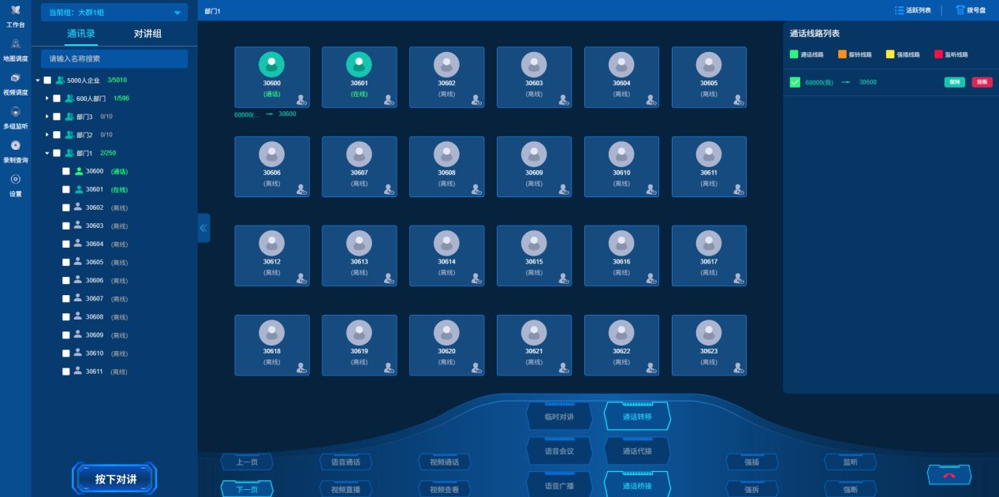
图4-21 语音呼叫界面
线路建立后调度台可对该线路进行通话转移或通话桥接；
通话转移
调度台在活跃线路中选择 通话线路，点击“通话转移” 功能，从用户列表中选定目标用户后，即可完成通话转接，整个过程不中断原有语音。如下图4-22所示；
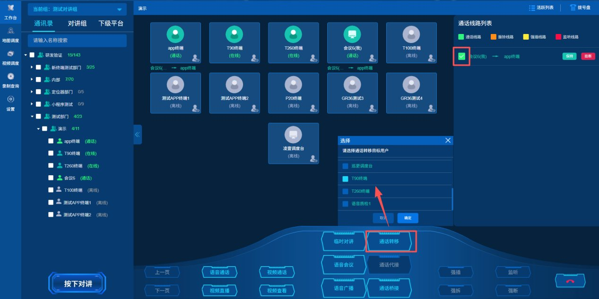
图4-22 通话转移
通话桥接
调度人员选择需桥接的两条通信链路，发起桥接操作后，系统会建立链路之间的语音转发通道，实现跨链路语音交互。
临时对讲
调度台用户可在成员列表中中勾选目标成员，勾选成员后点击临时对讲功能创建临时对讲组；如下图4-23所示；
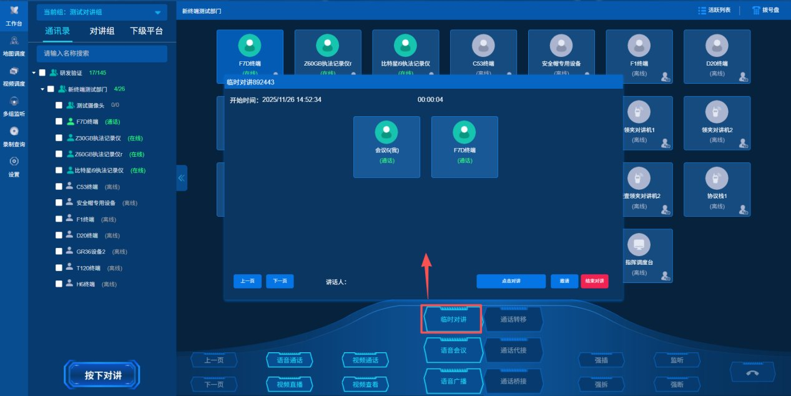
图4-23 临时对讲
- 左上角窗口显示临时对讲名称；
- 左下角显示当前讲话人；
- 点击【点击对讲】按钮，申请话权，抢到话权后可以进行讲话；点击【点击释放话权】按钮，释放话权；
- 点击【邀请】按钮，弹出成员列表框，可为临时对讲添加新成员。
- 点击【结束对讲】按钮，结束本次临时对讲；
语音会议
调度台用户可在成员列表中中勾选目标成员，勾选成员后点击语音会议功能创建语音会议；如下图4-24所示；
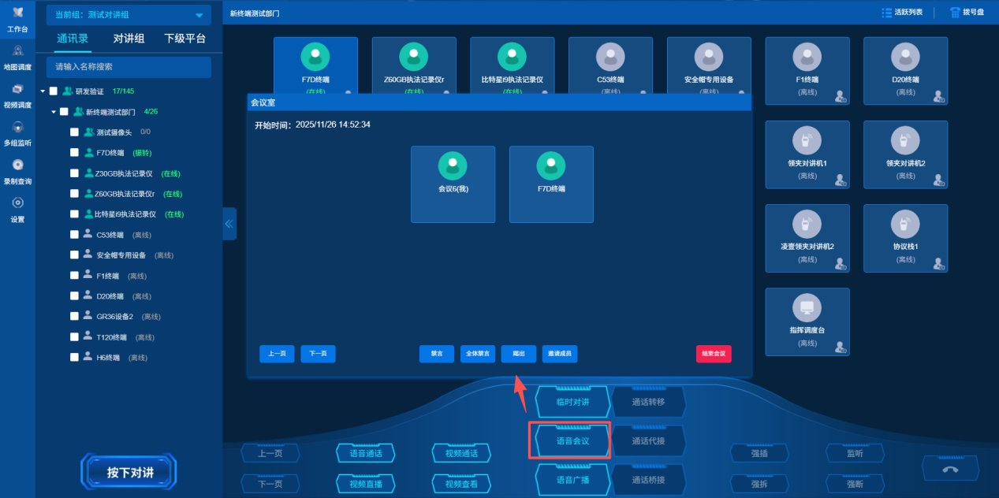
图4-24 语音会议
语音会议开始时，语音会议成员均可自由讲话；
- 点击【禁言】按钮，可对已选择目标成员进行禁言操作；
- 点击【全体禁言】按钮，可对语音会议中所有成员进行禁言操作；
- 点击【踢出】按钮，可将已选择成员踢出本次语音会议；
- 点击【邀请】按钮，弹出成员列表框，可为临时对讲添加新成员。
- 点击【结束会议】按钮，结束本次语音会议；
语音广播
调度台用户可在成员列表中中勾选目标成员，勾选成员后点击语音广播创建语音会议组；如下图4-25所示；
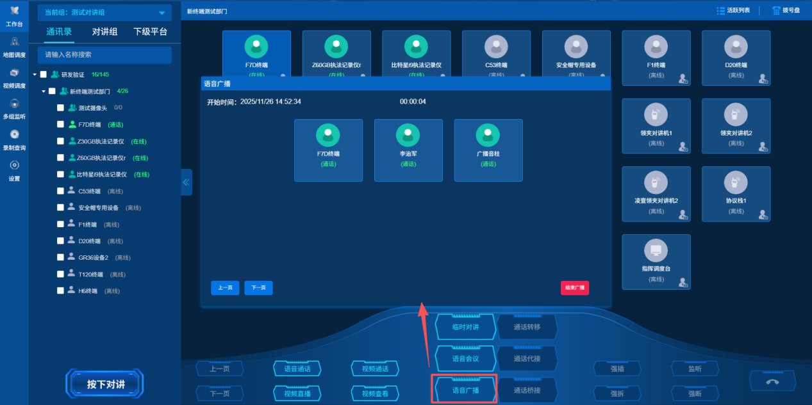
图4-25 语音广播
语音广播创建后，可看到成员是否进入收听，广播开始时，成员仅收听调度台用户实时讲话；
活跃线路列表
调度台用户可在该功能中详细看到部门中正在进行的语音线路，并进行，监听、强插、强拆、强断等语音调度功能；如下图4-26所示。
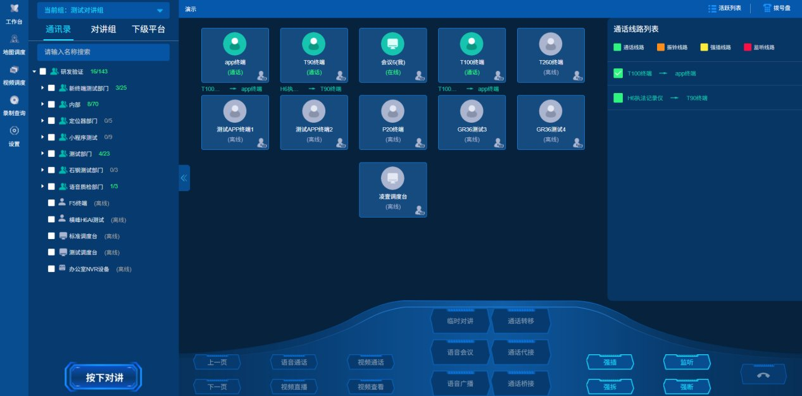
图4-26 活跃线路
监听
选择目标通话线路后，发起监听操作，即可实时监听该条语音通话线路；监听时，活跃线路中会显示调度台正在监听的线路；如下图4-27所示。
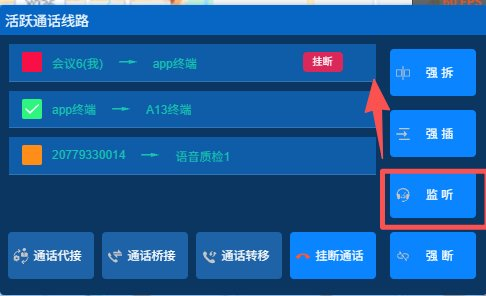
图4-27 监听功能
强插
调度人员选择目标通话后，发起 “强插” 操作，系统会将其接入当前通话链路，实现三方及以上的实时语音通话；如下图4-28所示。

图4-28 强插功能
强拆
调度人员选定需中断的通话后，执行 “强拆” 操作，系统将强制终止该通话的语音连接；如下图4-29所示。


图4-29 强拆功能
强断
调度人员选定需中断的通话后，执行 “强拆” 操作，系统将强制终止该通话的语音线路。如下图4-30所示。

图4-29 强断功能
4.3 语音审核
用户登录平台后可通过点击左侧导航栏语音审核功能，进入语音审核功能界面。
语音审核功能可查看每个终端工作过程中上传的录音文件及其AI审核记录，记录内容包括用户名称、记录起止时间、AI综合评分等，可根据日期时间和用户名称查询。如下图4-31所示。
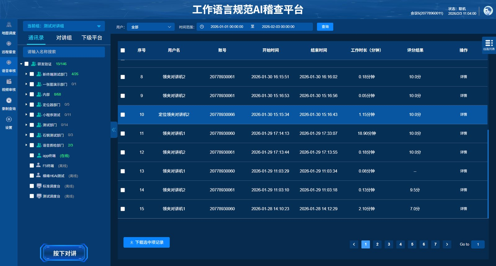
图4-31 语音审核界面
记录详情
用户可选择目标语音审核记录，点击详情，可查看语音转写的文字记录和AI分析详情信息。如下图4-32所示。
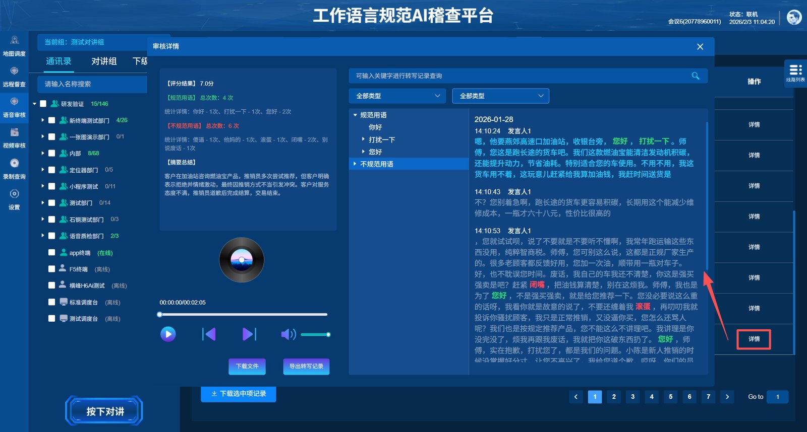
图4-32 语音审核详情
记录详情页面中可看到评分详情、录音总结、发言人讲话；
点击播放后“语音-文字同步播放”，语音播放器播放过程中右侧窗口同步高亮显示文字内容。
点击右侧窗口内的文字，语音播放器自动跳转到对应的语音文件位置，播放对应的原始语音。
也可通过点击规范用语与不规范用语进行快速筛选跳转。如下图4-33所示。
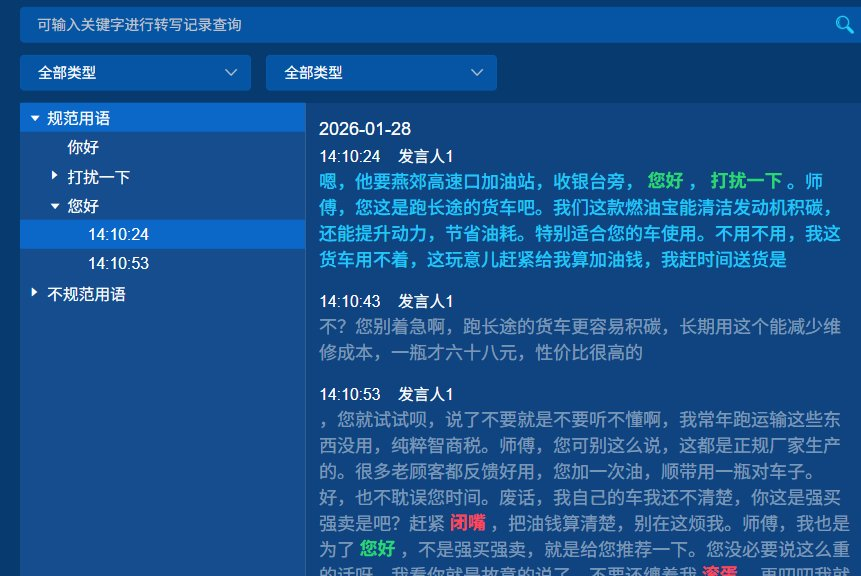
图4-33 用语筛选
转写记录中，会根据不同人物讲话进行角色分离，用户可通过发言人讲话进行筛选听讲。
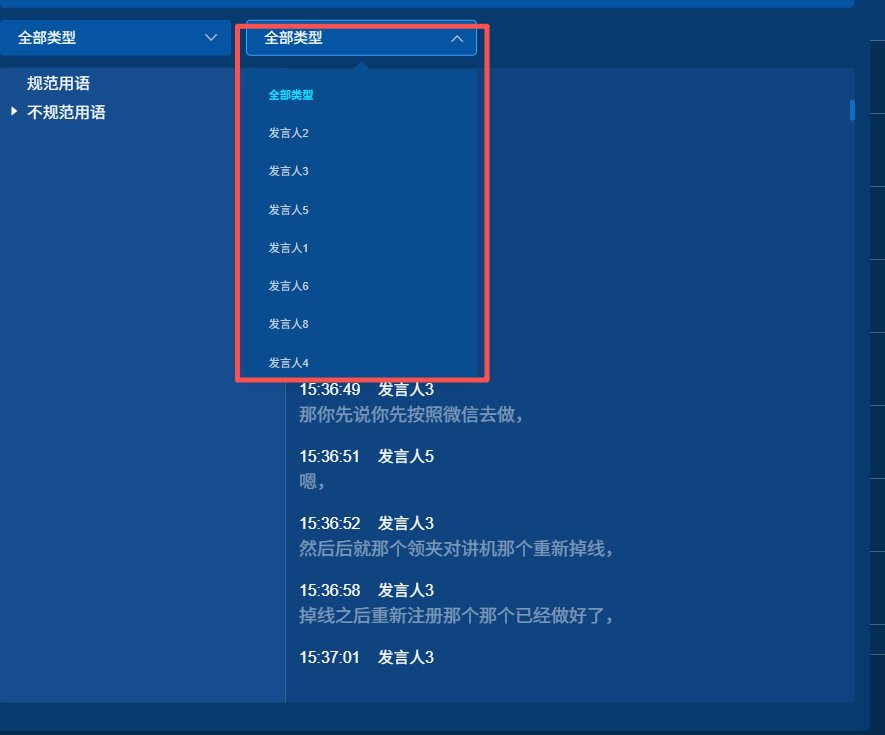
图4-33 角色分离
4.3 视频审核
业务功能
用户登录平台后可通过点击左侧导航栏视频审核功能，进入视频审核功能界面。
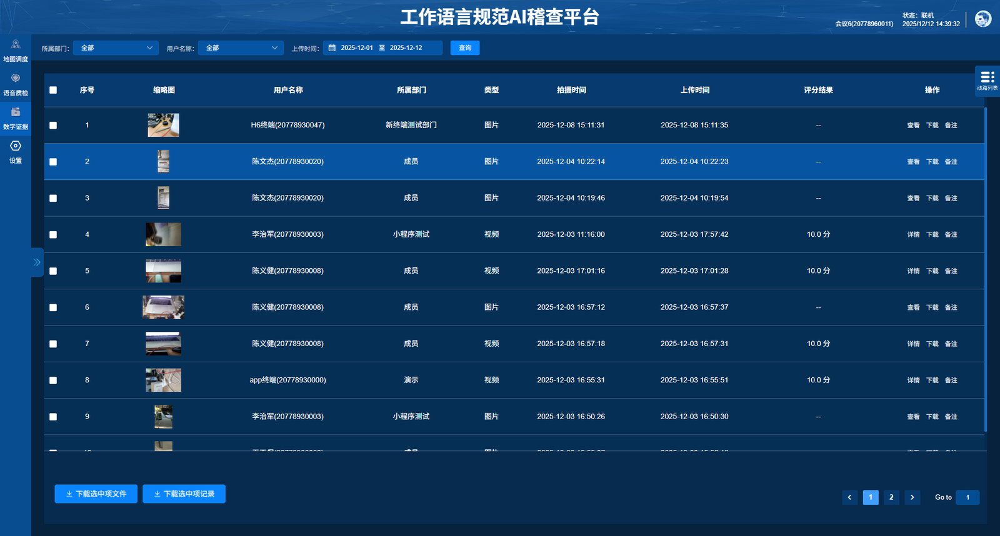
图4-34 视频审核界面
- 查询条件复选框：用户可再查询条件复选框内选择部门，上传人员与上传时间范围，选择完成后点击查询文件列表可根据查询条件筛选出对应文件。
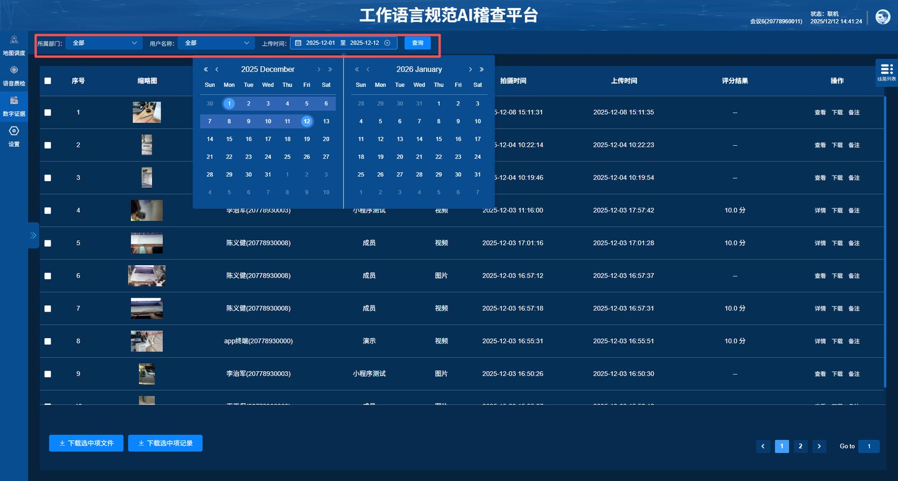
图4-35 视频审核查询条件
- 文件列表：文件列表中显示企业内成员上传的所有文件，可在列表中看到相对应的文件类型如视频、图片、录音文件以及文件上传时间。
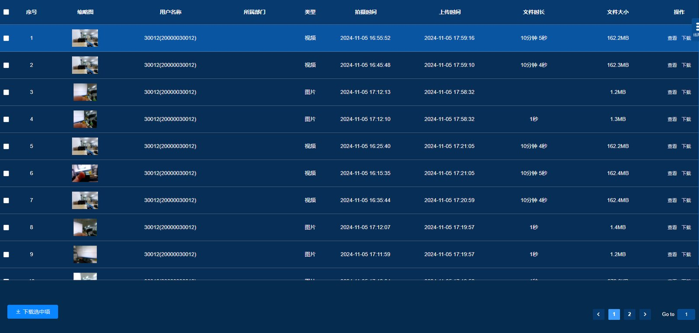
图4-36 视频审核列表
企业用户上传的视频文件也可进行实时AI综合评分；
平台可通过点击视频类型文件-详情进行查看；
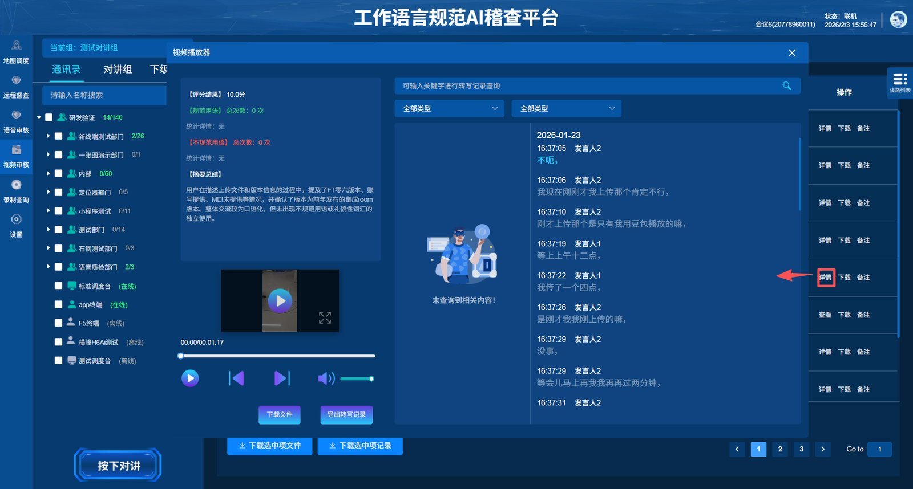
图4-37 视频AI评分
详情同步显示：视频窗口、“规范用语”与“不规范用语”记录、视频总结、视频语音转写记录、角色分离，五项模块；
点击播放后“视频-文字同步播放”，视频播放器播放过程中右侧文字窗口同步高亮显示文字内容。
点击右侧窗口内的文字，视频播放器自动跳转到对应的视频文件位置，播放对应的原始语音。